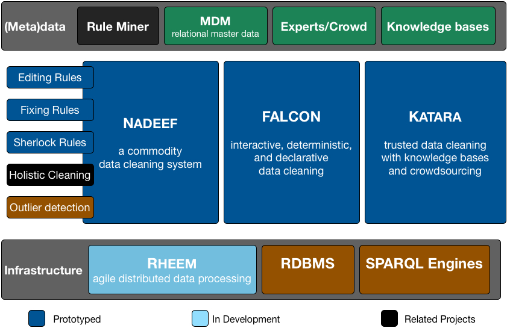

Overview

Publications
Detecting Data Errors: Where are we and what needs to be done?
The 42nd International Conference on Very Large Data Bases (VLDB), New Delhi, India, 2016
Ziawasch Abedjan, Xu Chu, Dong Deng, Raul Castro Fernandez, Ihab F. Ilyas, Mourad Ouzzani, Paolo Papotti, Michael Stonebraker, and Nan Tang
Interactive and Deterministic Data Cleaning: A Tossed Stone Raises a Thousand Ripples
ACM SIGMOD Conference on Management of Data (SIGMOD), San Francisco, USA, 2016
Jian He, Enzo Veltri, Donatello Santoro, Guoliang Li, Giansalvatore Mecca, Paolo Papotti, and Nan Tang
BigDansing: A System for Big Data Cleansing
ACM SIGMOD Conference on Management of Data (SIGMOD), Melbourne, Australia, 2015
Zuhair Khayyat, Ihab F. Ilyas, Alekh Jindal, Sam Madden, Mourad Ouzzani, Paolo Papotti, Jorge-Arnulfo Quiane-Ruiz, Nan Tang and Si Yin
KATARA: A Data Cleaning System Powered by Knowledge Bases and Crowdsourcing
ACM SIGMOD Conference on Management of Data (SIGMOD), Melbourne, Australia, 2015
Xu Chu, John Morcos, Ihab F. Ilyas, Mourad Ouzzani, Paolo Papotti, Nan Tang and Yin Ye
KATARA: Reliable Data Cleaning with Knowledge Bases and Crowdsourcing
The 41st International Conference on Very Large Data Bases (VLDB) (Demo), Kohala Coast, Hawai'i, 2015
Xu Chu, John Morcos, Ihab F. Ilyas, Mourad Ouzzani, Paolo Papotti, Nan Tang and Yin Ye
Proof Positive and Negative in Data Cleaning
The 31st International Conference on Data Engineering (ICDE), Seoul, Korea, 2015
Matteo Interlandi and Nan Tang
Incremental Detection of Inconsistencies in Distributed Data
IEEE Transaction on Knowledge and Data Engineering (TKDE): (Special issue: Best Papers of ICDE 2012, invited)
Wenfei Fan, Jianzhong Li, Nan Tang, and Wenyuan Yu
Towards Dependable Data Repairing with Fixing Rules
ACM SIGMOD Conference on Management of Data (SIGMOD), Snowbird, USA, 2014
Jiannan Wang and Nan Tang
Interaction between Record Matching and Data Repairing
ACM Journal of Data and Information Quality (JDIQ), 2014
Wenfei Fan, Shuai Ma, Nan Tang, and Wenyuan Yu *
NADEEF/ER: Generic and Interactive Entity Resolution
ACM SIGMOD Conference on Management of Data (SIGMOD demo), Snowbird, USA, 2014
Ahmed Elmagarmid, Ihab F. Ilyas, Mourad Ouzzani, Jorge Quiane-Ruiz, Nan Tang, and Si Yin
NADEEF: A Commodity Data Cleaning System
ACM SIGMOD Conference on Management of Data (SIGMOD), New York, US, 2013
Michele Dallachiesa, Amr Ebaid, Ahmed Eldawy, Ahmed Elmagarmid, Ihab F. Ilyas, Mourad Ouzzani, and Nan Tang
NADEEF: A Generalized Data Cleaning System
The 39th International Conference on Very Large Data Bases (VLDB Demo), Riva del Garda, Trento, Italy, 2013
Amr Ebaid, Ahmed Elmagarmid, Ihab F. Ilyas, Mourad Ouzzani, Jorge Quiane-Ruiz, Nan Tang, and Si Yin
Conflict Resolution with Data Currency and Consistency
ACM Journal of Data and Information Quality (JDIQ) (invited), 2014
Wenfei Fan, Floris Geerts, Nan Tang, and Wenyuan Yu
Inferring Data Currency and Consistency for Conflict Resolution
The 29th International Conference on Data Engineering (ICDE), Brisbane, Australia, 2013
Wenfei Fan, Floris Geerts, Nan Tang, and Wenyuan Yu
Data Quality Problems beyond Consistency and Deduplication
In search of elegance in the theory and practice of computation: a Festschrift in honour of Peter Buneman, Edinburgh, UK, 2013. (invited)
Wenfei Fan, Floris Geerts, Shuai Ma, Nan Tang, and Wenyuan Yu
Towards Certain Fixes with Editing Rules and Master Data
The VLDB Journal (VLDBJ) 21(2): 213-238, 2012 (Special issue: Best Papers of VLDB 2010, invited)
Wenfei Fan, Jianzhong Li, Shuai Ma, Nan Tang, and Wenyuan Yu
Incremental Detection of Inconsistencies in Distributed Data
The 28th International Conference on Data Engineering (ICDE), Washington DC, US, 2012
Wenfei Fan, Jianzhong Li, Nan Tang, and Wenyuan Yu
Interaction Between Record Matching and Data Repairing
ACM SIGMOD Conference on Management of Data (SIGMOD), Athens, Greece, 2011
Wenfei Fan, Jianzhong Li, Shuai Ma, Nan Tang, and Wenyuan Yu
Towards Certain Fixes with Editing Rules and Master Data
The 36th International Conference on Very Large Data Bases (VLDB), Singapore, 2010 (the best paper award)
Wenfei Fan, Jianzhong Li, Shuai Ma, Nan Tang, and Wenyuan Yu